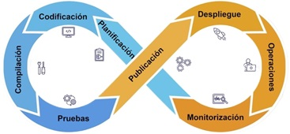

Ciclo de vida de una aplicación móvil y su relación con DevOps
El ciclo de vida de una aplicación móvil describe todas las fases que atraviesa una app desde su concepción hasta su retirada. Comprender este ciclo permite desarrollar soluciones más robustas, escalables y mantenibles, optimizando recursos y minimizando errores. En el contexto de PAMN, este enfoque es esencial para preparar al estudiante en entornos reales de desarrollo.
Objetivos del ciclo de vida
- Establecer un marco ordenado para el desarrollo.
- Identificar y controlar riesgos desde fases tempranas.
- Asegurar la calidad del producto desde su diseño.
- Permitir una entrega continua y sostenible.
Breve historia
Inicialmente, el ciclo de vida del software seguía modelos rígidos como el modelo en cascada, donde cada fase debía completarse antes de pasar a la siguiente. Con la evolución de las metodologías ágiles, se impuso una visión iterativa e incremental del desarrollo, y con la llegada del desarrollo móvil surgieron nuevas necesidades: integración continua, automatización, despliegue frecuente y monitorización en tiempo real. Es aquí donde emerge DevOps, una práctica que unifica el desarrollo (Dev) y las operaciones (Ops).
DevOps como intersección de disciplinas
La imagen anterior representa la integración de tres dimensiones fundamentales: desarrollo, operaciones y control de calidad. El área donde se superponen da lugar al enfoque DevOps, que busca romper los silos tradicionales, fomentar la colaboración entre equipos y automatizar todo lo posible para entregar valor de forma continua al usuario final.
El ciclo DevOps en acción

Este diagrama muestra el flujo típico de un proceso DevOps, en forma de bucle infinito. Cada etapa está conectada a la siguiente, favoreciendo una entrega continua e integración constante. Las fases principales son:
1. Planificación
Definición de requisitos, tareas y objetivos. Se pueden utilizar herramientas como Jira, Trello o Azure Boards.
2. Codificación
Desarrollo de funcionalidades. Aquí se emplean lenguajes como Kotlin, Swift, Dart, Java o frameworks como React Native. Herramientas: Android Studio, Xcode, VS Code.
3. Compilación
Generación de artefactos ejecutables. Herramientas comunes: Gradle, Maven, Xcode Build.
4. Pruebas
Ejecutadas de forma automatizada o manual. Destacan frameworks como JUnit, Espresso, XCTest, o pruebas E2E con Appium.
5. Publicación
Subida a tiendas como Google Play o App Store. Automatizable con Fastlane, GitHub Actions, Bitrise.
6. Despliegue
Distribución en entornos de producción o pruebas (alpha, beta). Puede hacerse vía Firebase App Distribution o TestFlight.
7. Monitorización
Análisis del rendimiento y errores. Herramientas típicas: Firebase Crashlytics, Sentry, New Relic.
8. Operaciones
Gestión de la infraestructura, soporte y mantenimiento. Se apoyan en CI/CD (GitHub Actions, GitLab CI, Jenkins) e infraestructura como código (IaC).